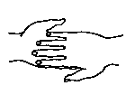
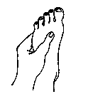
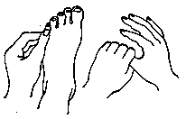
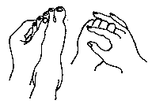
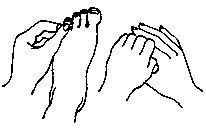
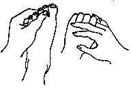
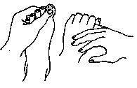

Os
oito Mudras
Notas:
1 - M.d. = mão direita M.e. = mão esquerda.
2 - O texto sublinhado indica que pode ser feito usando alternadamente o lado
direito (mão direita) e depois o lado esquerdo (mão esquerda).
3 - Tocar a área indicada, com a ponta dos dedos da mão, durante alguns minutos
ou até sentir uma pulsação rítmica.
1 - As palmas e as solas - Revitalizando todo o Ser .
|

|
A Palma das Mãos. Junte palma com palma, de modo que a ponta dos dedos da m.d. toquem a palma esquerda e a ponta dos dedos da m.e. toque a palma direita. |
|

|
A Sola dos Pés. Com a m.e. segure o pé esquerdo de modo que a ponta dos dedos toque o centro da sola; o polegar toca o peito do pé. |
2 - Dedos das Mãos e Dedos dos Pés Opostos. O Polegar das Mãos e os Dedinhos dos Pés.
|

|
Segure com o polegar da m.e. levemente o dedo mínimo esquerdo do pé . Na sequência envolver o dedo polegar da m.d. co m a outra mão. |
3 - Dedos das Mãos e Dedos dos Pés Opostos. Dedo Médio das Mãos e o Dedo Médio dos Pés.
|

|
Segure com o polegar da m.e. levemente o dedo médio esquerdo do pé. Na sequência envolver o dedo médio da m.d. com a outra mão. |
4 - Dedos das Mãos e Dedos dos Pés Opostos. Dedo Indicador das Mãos e o Quarto Dedo dos Pés.
|

|
Segure com o polegar da m.e. levemente o quarto dedo esquerdo do pé. Na sequência envolver o dedo indicador da m.d. com a outra mão. |
5 - Dedos das Mãos e Dedos dos Pés Opostos.
|

|
Segure
com o polegar da m.e. levemente o segundo dedo esquerdo do pé.
Na sequência envolver o dedo anular da m.d. com a outra mão. |
6 - Dedos das Mãos e Dedos dos Pés Opostos.
|

|
Segure com o polegar da m.e. levemente o dedão esquerdo do pé. Na sequência envolver o dedo mínimo da m.d. com a outra mão. |